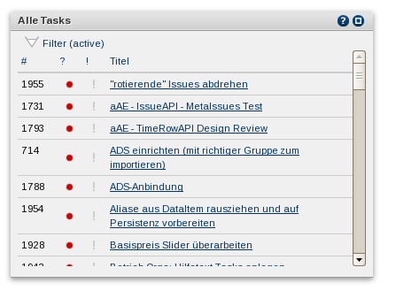

List and filter tasks, choose tasks.
|  The first column ist the task id, it's main identifier. The second column ist the task status, whereas gray is 'not evaluated', red is 'not started', orange is 'in progress' and green is 'done'. The third column is the priority followed by the task title.
|